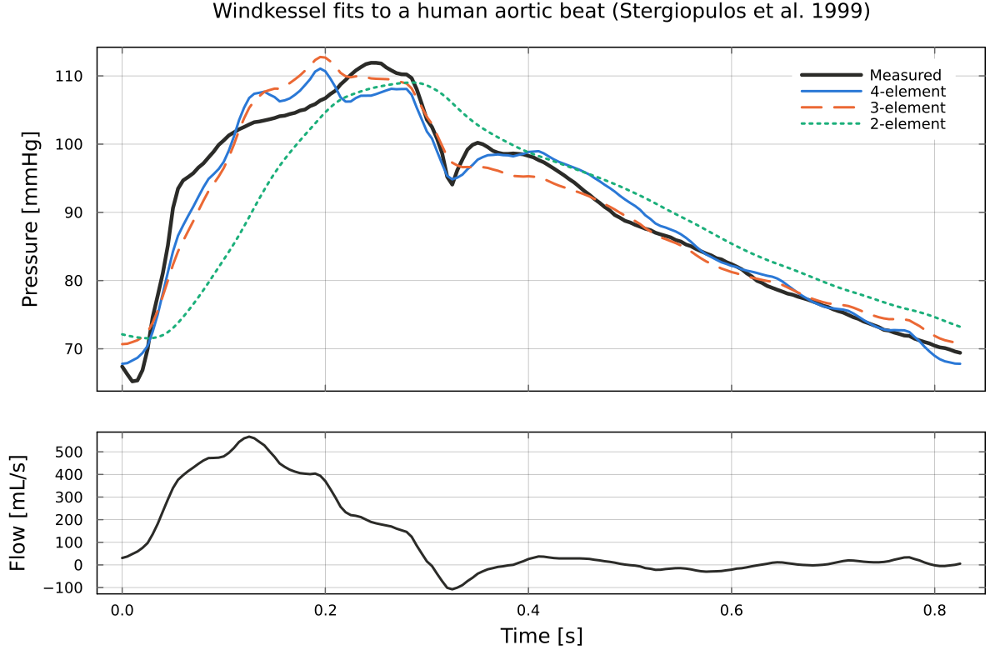
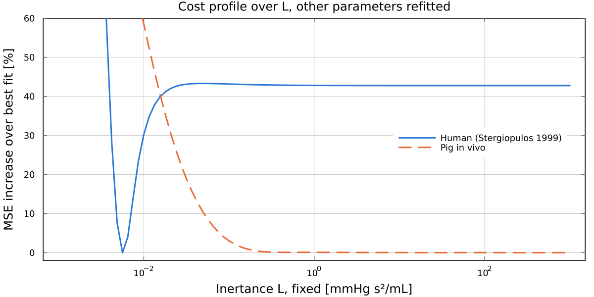

WindkesselIdentification.jl
Fit 2-element, 3-element and parallel 4-element Windkessel models of the cardiac afterload to measured aortic pressure and flow. The models are simulated in discrete time (exact zero-order hold) and fitted by output-error minimisation with Newton's method, using exact gradients and Hessians from forward-mode automatic differentiation.
The package is the code behind Pigot et al. (2021), Identification of cardiac afterload dynamics from data, IFAC-PapersOnLine 54(15), 508-513, and ships the three data sets used there.
Installation
] add WindkesselIdentificationQuickstart
Fit the 4-element model to one human beat, with the initial state solved from periodicity at every step:
using WindkesselIdentification
P, Q, h = load_stergiopulos1999() # pressure [mmHg], flow [mL/s], h = 0.005 s
θ0 = [0.85, 1.5, 0.05, 0.006] # start: Rp, C, Rc, L
θ, res = identify(θ0, solvex0(G(θ0, h), Q), Q, P, h; x0id=false, x0solve=true)
round.(θ, sigdigits=3)4-element Vector{Float64}:
0.803
1.25
0.0562
0.00547The mean squared error of the simulated pressure, in mmHg^2:
Psim = simulate(θ, solvex0(G(θ, h), Q), Q, h)
round(sum(abs2, Psim - P) / length(P), sigdigits=3)5.74The 3-element model, with θid marking all three parameters as free:
θ3, _ = identify(θ0[1:3], solvex0(G3(θ0[1:3], h), Q), Q, P, h;
θid=[1, 1, 1], x0id=false, x0solve=true, G_=G3)
round.(θ3, sigdigits=3)3-element Vector{Float64}:
0.769
1.81
0.0339
Models and units
The parallel 4-element model has impedance Z(s) = Rc + Rp/(1 + s C Rp) - Rc/(1 + s L/Rc), with flow as input and pressure as output. The 3-element model is the limit L = Inf, and the 2-element model has Rc = 0. G(θ, h) returns a ControlSystemsBase StateSpace, so bode, lsim and the rest of that ecosystem apply.
| Quantity | Unit |
|---|---|
| pressure | mmHg |
| flow | mL/s (Lmin_to_mLs, mLs_to_Lmin convert from and to L/min) |
| time, h | s |
| Rp, Rc | mmHg s/mL |
| C | mL/mmHg |
| L | mmHg s^2/mL |
| state x1 | volume on C, mL |
| state x2 (4-element) | L times the flow through L, mmHg s |
Identifiability
Fix the inertance L, refit the other three parameters, and plot how much worse the fit gets. On the human beat the cost has a clear minimum. On the pig data it is flat for any L above about 0.3 mmHg s^2/mL, so L cannot be identified there and the 3-element model fits as well as the 4-element one.

Data
load_stergiopulos1999: one type A beat from Figure 4A of Stergiopulos et al. (1999), digitised and resampled at 200 Hz.load_pig: aortic pressure and flow from two 65 kg pigs, one heart beating in vivo and one beating ex vivo against a synthetic afterload, logged at 200 Hz. See the paper for details.
The examples/ folder of the repository reproduces the paper's analysis: multiple initialisation, Hessian condition numbers, Bode plots and persistence of excitation.
Citing
Please cite the paper; the repository's CITATION.cff has the details.